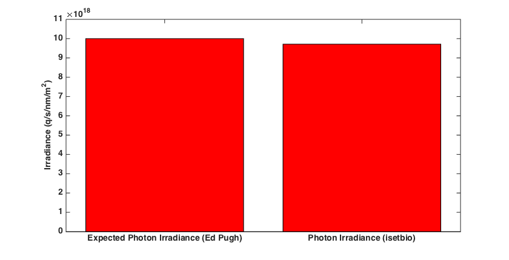

Contents
- Function implementing the isetbio validation code
- Initialize ISETBIO
- Set run parameters
- Create a uniform monochromatic scene
- Create human optics with desired pupil size
- Compute optical image from the scene
- Get irrandiance in the center
- Compute difference from expected value
- Validate against a 3% error
- Plotting
function varargout = v_HumanRetinalIlluminance580nm(varargin) % % Validate that a photon flux of 10^15 photons/cm^2/sec at 580 nm corresponds to a retinal illuminance of 590,000 photopic trolands. % % Ed Pugh wrote a document (Pugh_Summary_for_FFB.pdf) asserting that based % on Delori and Webb 2007 he knows that % % At the eye: % 10^15 photons cm^-2 sec^-1 at 580 nm corresponds to a retinal % illuminance of 590,000 photopic Trolands. % % He then says that a photopic Troland is related to candelas/m2 by the % principle that a 1 cd m^-2 patch seen a 1 mm^2 pupil area. For a pupil % that is 2 mm diameter, the area is 3.14159 mm^2. So converting back to the % scene, % % 590,000 Trolands at the retina at 580nm is supposed to be 187,800 % cd/m2 at the scene varargout = UnitTest.runValidationRun(@ValidationFunction, nargout, varargin); end
Function implementing the isetbio validation code
Validation script for human retinal irradiance at 580 nm.
function ValidationFunction(runTimeParams)
Initialize ISETBIO
s_initISET;
Set run parameters
sceneFOV = 20; % 20 degrees scene sceneMeanLuminance = 187800; % Cd/m2 monoChromaticWavelength = 580; % pupilDiameterInMM = 2; % mm
Create a uniform monochromatic scene
scene = sceneCreate('uniformmonochromatic'); scene = initDefaultSpectrum(scene,'custom', monoChromaticWavelength); scene = sceneSet(scene,'mean luminance', sceneMeanLuminance); % Cd/m2 scene = sceneSet(scene,'fov', sceneFOV);
10 nm band assumed
Create human optics with desired pupil size
pupilRadiusInMeters = pupilDiameterInMM / 2 / 1000;
optics = opticsCreate('human', pupilRadiusInMeters);
oi = oiCreate('human');
oi = oiSet(oi,'optics',optics);
Compute optical image from the scene
oi = oiCompute(scene,oi);
Get irrandiance in the center
roi = round(size(oi.depthMap) ./ 2 );
photonIrradiance = oiGet(oi,'roi mean photons',roi);
Compute difference from expected value
expectedPhotonIrradiance = 10^19;
percentDifference = (photonIrradiance - expectedPhotonIrradiance)/expectedPhotonIrradiance;
Validate against a 3% error
tolerance = 0.03;
quantityOfInterest = percentDifference;
resultString = sprintf('Irradiance (q/sec/m^2/nm) at %.0f nm = %g, Expected = %g, Residual = %g %%', ...
monoChromaticWavelength, photonIrradiance, expectedPhotonIrradiance, percentDifference*100);
UnitTest.assertIsZero(quantityOfInterest, resultString,tolerance);
% append to validationData
UnitTest.validationData('fov', sceneFOV);
UnitTest.validationData('tolerance', tolerance);
UnitTest.validationData('scene', scene);
UnitTest.validationData('oi', oi);
Plotting
if (runTimeParams.generatePlots) h = figure(500); set(h, 'Position', [100 100 840 430]); clf; bar([1 2], [expectedPhotonIrradiance photonIrradiance], 'r'); set(gca, 'XTick', [1 2], 'XLim', [0.5 2.5], 'YLim', [0 max([expectedPhotonIrradiance photonIrradiance])*1.1]); set(gca, 'XTickLabel', {'Expected Photon Irradiance (Ed Pugh)','Photon Irradiance (isetbio)'}); set(gca, 'FontName', 'Helvetica', 'FontSize', 14, 'FontWeight', 'bold'); xlabel('', 'FontName', 'Helvetica', 'FontSize', 14); ylabel('Irradiance (q/s/nm/m^2)', 'FontName', 'Helvetica', 'FontSize', 14) end
end